用 Claude 做一支 AI 動畫：成本、流程與限制
我花 7 天、兩個 Claude Pro 帳號、一個 GPT Plus 和一張 RTX 4090，生成出一支 32 秒、9:16 畫面比例的動畫短片。
最開始簡單的發想是：有一個角色在行走時被拍，然後發動能力。
起點：人設稿
其實角色的存在先於動畫發想。我將很久以前的一張手繪素描，用 GPT 生成人設稿、三視圖、外套等 8 張服飾配件、20 種表情的圖檔，最後收成一張固定色值的平塗頭像。這張平塗頭像就是整支動畫的畫風基準，之後每一張首尾幀都對著它和三視圖畫。
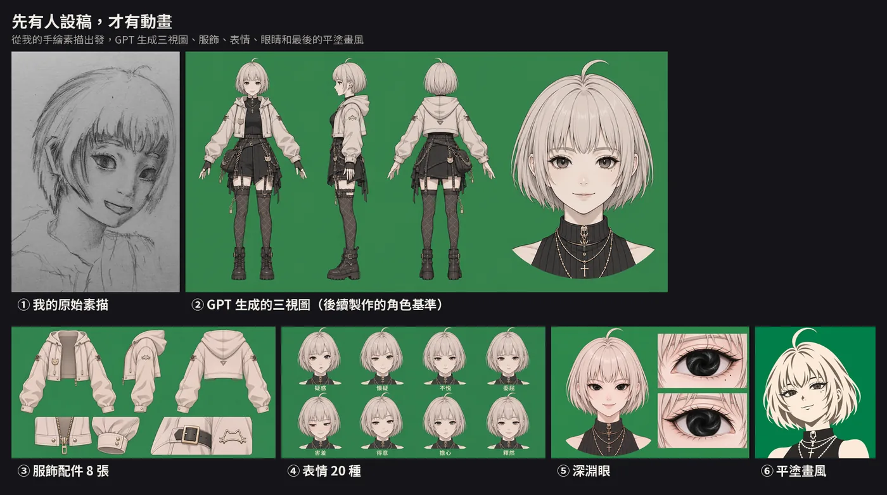
實際成本
| 項目 | 實際情況 |
|---|---|
| 時間 | 7 天（11/06–11/12）。每天至少在電腦前 10 小時以上等待結果，最長一段從 11/08 中午到 11/09 晚上幾乎沒停，約 33 小時 |
| 訂閱 | Claude Pro ×2、GPT Plus ×1；沒有其他付費，其餘模型（影片 MiniMax H3、音樂 ACE-Step 1.5 XL、音效 Stable Audio 3）都在本機 ComfyUI 跑 |
| 硬體 | RTX 4090（24 GB）。影片模型已經貼著記憶體上限，電腦在生成開跑的瞬間硬關機好幾次 |
| Claude 工作量 | 我發了約 140 則訊息；Claude 做了 3,000 次以上工具呼叫、約 50 小時有紀錄的運作；兩個帳號都撞過用量上限 |
| 重做次數 | 畫面 10 版、配樂 4 版、後製兩套共 12 版 |
| 丟掉的比例 | 影片模型產生約 170 個資料夾、一萬四千多張格，成片只用到 23 個資料夾 |
| 硬碟 | 專案資料夾約 14 GB，另加約 38 GB 的配樂模型 |
可用的流程
我最後總結的分工流程是「GPT 畫、MiniMax H3 動、Claude 做和查、我判斷」，而且一層定案才做下一層。
- GPT 畫端點：用 GPT Codex 呼叫圖像生成，畫每一鏡的首幀、尾幀和關鍵幀。首幀是這鏡開始的狀態，尾幀是結束的狀態，故事板只是中間過程。
- H3 在本機生成動態：ComfyUI 跑 MiniMax H3，一次只跑一段。
- Claude 先自己檢查：量動作有沒有頓挫、是不是一拍二、首尾對不對得上 GPT 的圖，不合格當場重跑。
- 擬定意見表逐鏡回饋：讓 Claude 做一份可以逐格看的意見表，由我填完後回一句「已填」，它讀了就做下一版。
- 一層定案才做下一層：畫面 10 版定案 → 配樂 4 版定稿 → 再疊後製有 6 版。
意見表和虛擬片場是這套流程裡最有用的兩個工具：前者讓我不必用文字描述「第幾格哪裡不對」，後者讓機位和時間先定下來再生成，直接利用商用模型的多模態優勢，透過影像讀取。
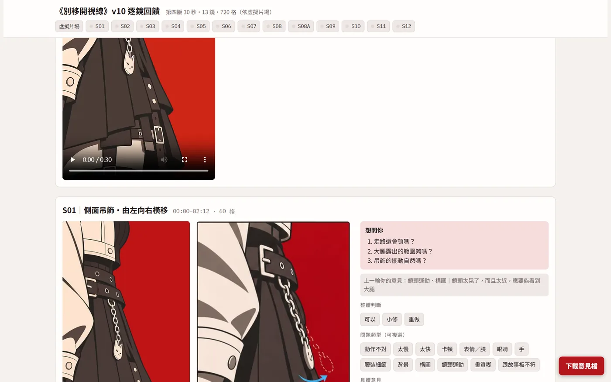
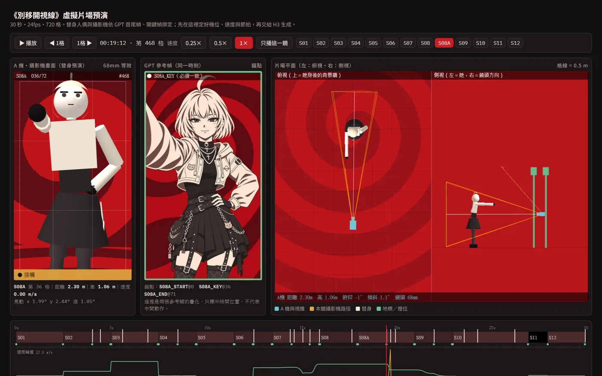
配樂怎麼做出來
配樂在畫面定案後才開始做，走了四個版本。定稿的音樂全部由本機 ComfyUI 的 ACE-Step 1.5 XL 生成，音效用 Stable Audio 3，Claude 負責挑素材、對拍、剪接和混音。
- 三個版本都不行：Claude 先自己寫譜、用程式合成，再試真實樂器取樣和 ACE-Step。Claude 聽不到聲音，只能透過頻譜量測，合成音色還有很好認的 AI 味「叮」的聲音。
- 改變配樂流程：讓 Claude 先列參考曲風讓我挑方向。
- 從短樣本挑：ACE-Step 每個方向生成多條 10 秒樣本，由我挑選其中一份。
- 用配樂檢查表逐段改：每一段都透過檢查表逐分鏡、逐幀回饋意見，填完檢查表就讓 Claude 操作 ComfyUI 重新生成。
- 盲測定稿：長前奏做了兩輪盲測，我分不出差別，就定稿用原版。
後製怎麼做出來
後製是疊在「定案畫面＋定稿配樂」上的圖層，全部由 Claude 寫的 Python 程式離線算出來，不用 ComfyUI、不吃顯卡。
特效做了兩套：第一套做到第六版整套作廢，第二套從敘事開始，五輪意見就完成。
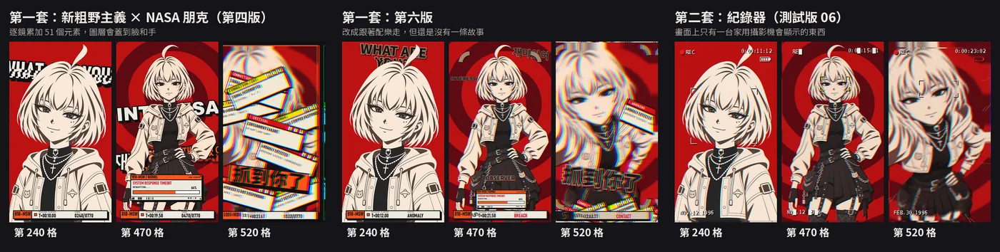
第一套：新粗野主義 × NASA 朋克（作廢）
- 我想要畫面上有明顯的互動視效，先試新粗野主義，再加上 NASA 朋克。
- 我要一張能標位置的意見表，Claude 做了「後製編輯器」：可以在原片上框位置、標格數，還有 51 種效果表，每種都用片中畫面做範例，我不懂名詞也能直接挑。
- 我說效果與配樂不搭，所以全部拉掉重做。
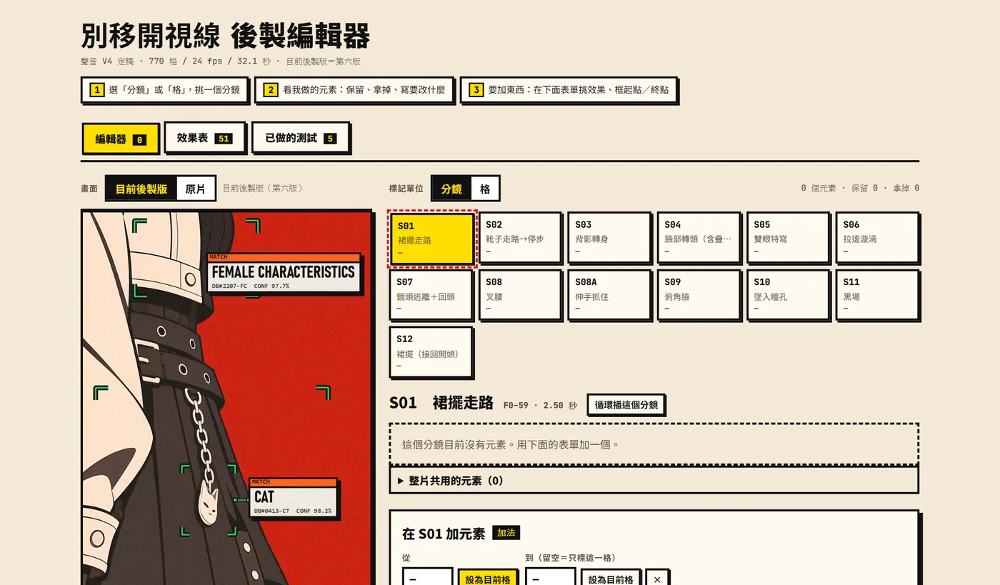
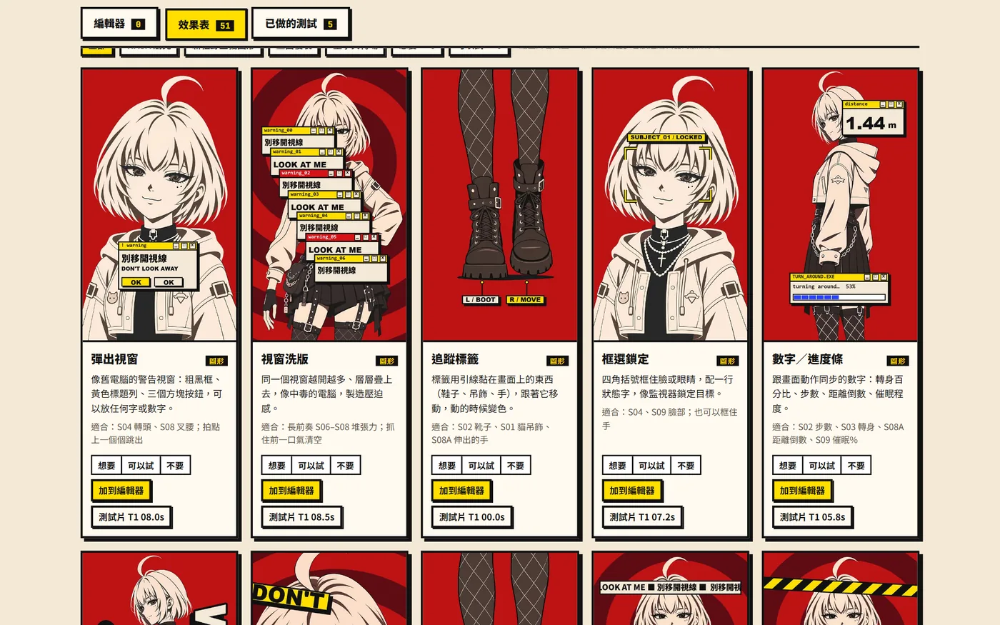
第二套：紀錄器（採用版本）
- 將舊視效當作沒發生過，從敘事開始重談。讓 Claude 採用一問一答的策略提了四個方向（催眠、視線、畫布、滑不走），最後把「眼睛」變成類似紀錄器的介面，再選定家用磁帶攝影機風格。
- 規則：畫面上只出現一台攝影機會顯示的東西（REC、時間碼、電池、日期、對焦框、變焦條、倒帶），故事靠這些介面「怎麼壞掉」敘事。
- 先做觀景窗語彙示意，再做整片測試版 01，之後用逐鏡意見表改了五輪到 06，每輪要改的鏡數從 7 鏡降到 1 鏡。
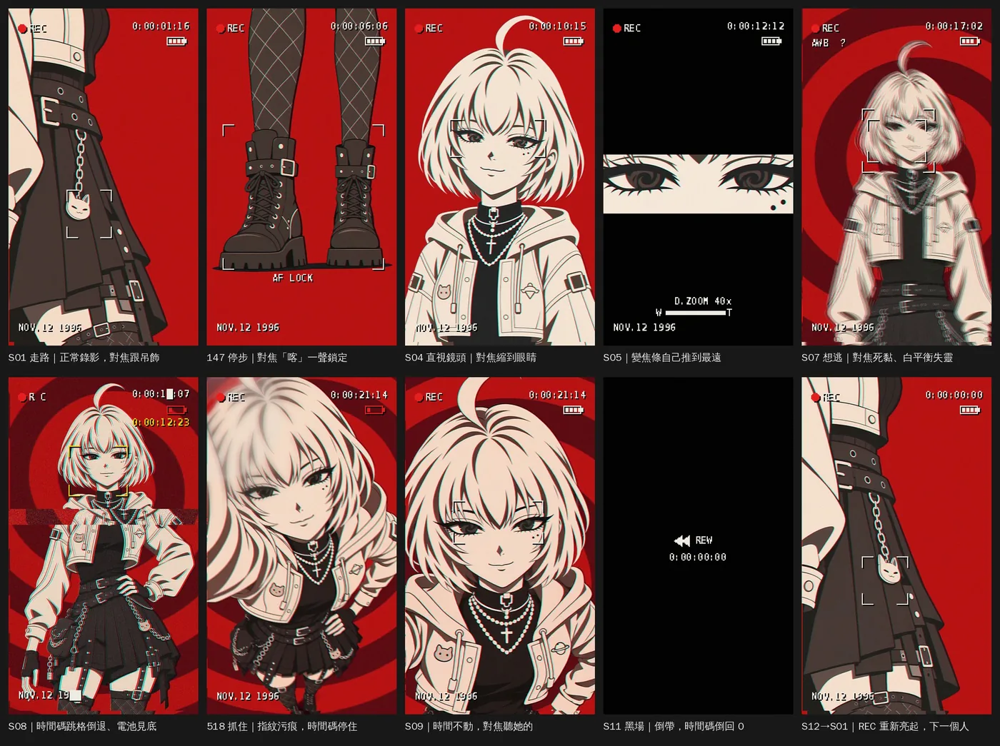
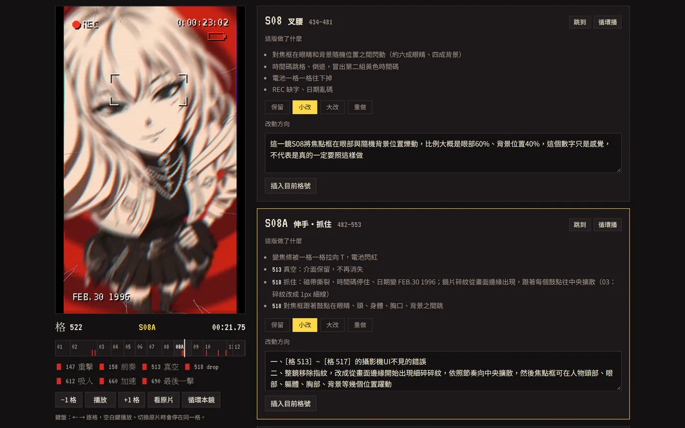
限制：哪些還得轉人工
- 品味和最後判斷：AI 模型聽不到聲音，配樂只能量響度和拍點；Claude 無法有效判斷畫面的連續性，對 AI 來說影片只是排列好的圖片，前後幀部分出現破圖或破綻，得逐幀修改。AI 無法理解美感，好不好看也需要人類看。
- 角色本身：Claude 的影像生成能力其實很差，圖片只能來自 GPT 的生成圖片模型或 H3。
- H3 不聽話的地方：只靠文字演不出多步驟動作、物件的運動無法預期，或是場景出現其他物件或人物，人物也很難依照故事板演出，常常一拍二拍三拍四。解法都是「給更多圖」當關鍵參考，而不是「寫更多字」。
- 先講敘事再做特效：第一套後製做到第六版才發現沒有故事，整套作廢重來。
- 硬體與環境：4090 也只能一次跑一段；生成開跑的瞬間硬關機好幾次。
- 人要一直在：每一輪都要我看、填、重開 ComfyUI；兩個帳號的線上頁面互相打不開，交接靠本機文件。
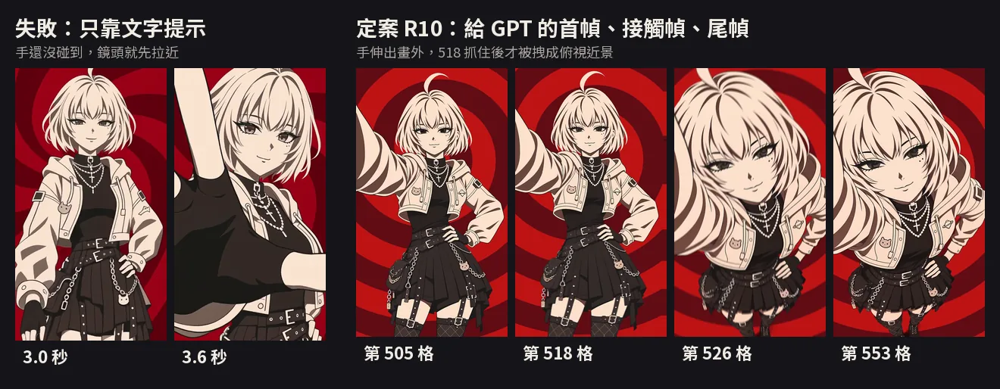
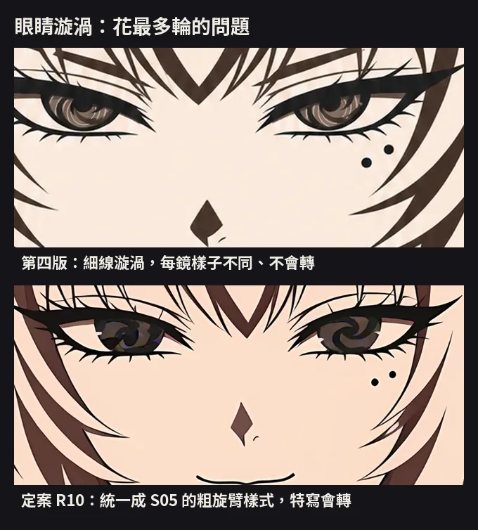
我怎麼帶
- 工作環境規則定義：Claude 先提案，我說「開始」才動手；永久刪除這類不可逆的事一律先問。
- 對話講不清楚時就要求做工具：我說希望它「逐分鏡或逐幀問我」，之後每一輪都有意見表；我說「就像真的片場一樣」，就有了可交互的虛擬片場。
- 我說「不要做完才讓我挑東挑西」之後，每段輸出都先自查。
- 授權一步步放大：從可以改腳本，到可以自己改 ComfyUI 節點，到後製「打掉重練，由你主導」。
成品
畫面 10 版、配樂 4 版定稿，再疊上「家用磁帶攝影機介面」的 6 版後製。
https://youtube.com/shorts/ubgrI46EG4I
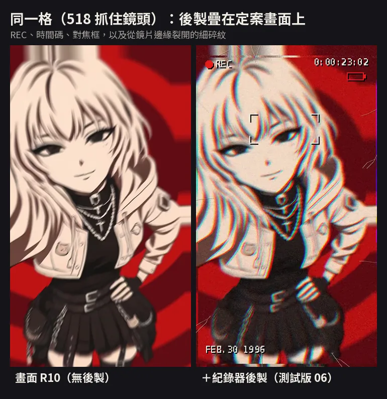